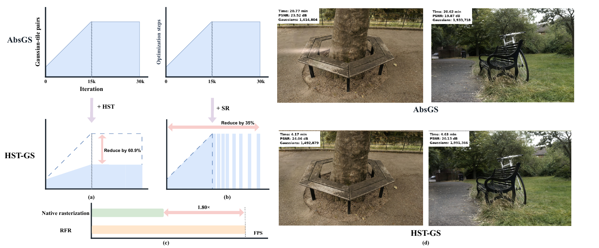
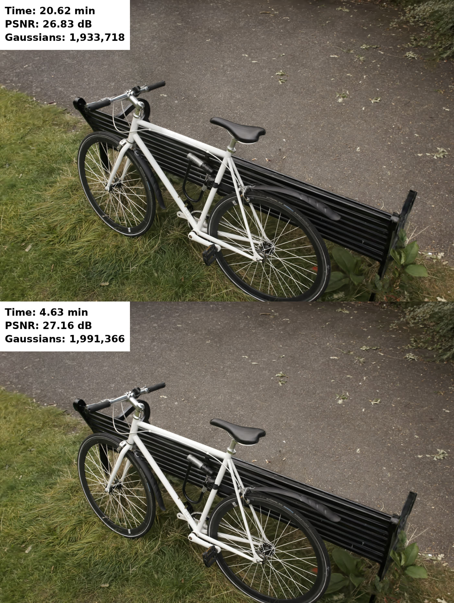

01Spatial
Hierarchical Super-Tile Screening
Screen 4 × 4 groups before emitting base-tile instances, then sort surviving work with a compact 24-bit depth key.
60.9% fewer pairs3D Gaussian Splatting · Research project
Sparsifying when and where computation happens across training and rendering.
1 Shanghai University of Engineering Science · 2 Xiamen University · 3 East China Normal University · 4 Ningbo University
01 / Training in motion
A fixed test view of Bicycle, with reconstruction quality tracked against training time.
The clip compresses training into 10 seconds. The HST-GS view and red curve stop updating when its run finishes; the backbone continues. Horizontal plot coordinates show elapsed training time.
02 / The idea
3D Gaussian Splatting renders novel views efficiently, yet its pipeline still performs avoidable work. HST-GS reduces computation along three complementary dimensions. Hierarchical Super-Tile Screening (HST) rejects Gaussian–tile assignments that cannot make a retained contribution. Scheduled Refinement (SR) skips selected complete optimization steps after density control ends. Render-Time Forward Rasterization (RFR) specializes the final rendering path for forward-only execution.
Across 13 scenes from Mip-NeRF 360, Deep Blending, and Tanks & Temples, HST and SR yield a 5.13× average training speedup over the shared AbsGS backbone with comparable reconstruction quality. RFR improves average rendering throughput by 1.80× on the same trained models.
03 / Method
HST-GS trims work within each rasterization step, across training steps, and after training.

Screen 4 × 4 groups before emitting base-tile instances, then sort surviving work with a compact 24-bit depth key.
60.9% fewer pairsAfter density control, distribute sparse complete optimization steps through the remaining training horizon.
35% of the nominal budget skippedUse a compact forward-only path for evaluating the trained scene, without training-oriented intermediate work.
1.80× average throughput04 / Results
Results below follow the current manuscript. HST-GS reconstruction metrics are 3-seed means; rendering FPS uses the complete RFR path.
Training efficiency · 13 scenes
Average training time falls from 21.26 minutes for the AbsGS backbone to 4.14 minutes with HST + SR.
Compare representative methods across the three datasets.
| Method | Time min ↓ | PSNR ↑ | SSIM ↑ | LPIPS ↓ | Gaussians ↓ | FPS ↑ |
|---|
Table 1 values from the supplied manuscript. FPS reflects each method’s reported evaluation path; HST-GS uses RFR. Lower is better for Time, LPIPS, and Gaussian count.
Render-time efficiency
Overall RFR throughput, compared with 196.39 FPS from the native evaluation rasterizer on the same HST-GS models and test views.
Experimental evidence
Training, refinement schedules, and warmed rendering across the evaluated scenes.
HST + SR speeds up training by 3.84×–6.80× across individual scenes. Reconstruction changes vary by scene; the 13-scene mean PSNR change is −0.080 dB.
Per-scene 3-seed means on A800. The source figure labels HST as “HTS”. Training speedup uses the AbsGS backbone as its reference.
05 / Compare reconstructions
Choose a scene and drag the divider to compare the AbsGS backbone with HST-GS at the same camera view.
Mip-NeRF 360 · View 1

Bicycle · View 1 ready.
Image annotations describe the shown example run and view; they are not the 3-seed scene averages in the quantitative tables. The comparison uses the original paired images.
06 / Citation
Please use the manuscript citation below until a final venue entry is available.
@misc{xiong2026hstgs,
title = {HST-GS: Fast 3D Gaussian Splatting with Hierarchical Super-Tiles and Scheduled Refinement},
author = {Xiong, Yu-Jie and Zhou, Zheng and Zhang, Jia-Chen and Xie, Xijiong},
year = {2026},
note = {Preprint}
}HST-GS builds on the AbsGS training backbone and evaluates on Mip-NeRF 360, Deep Blending, and Tanks & Temples. The method overview and baseline comparison come from the HST-GS manuscript. Training video, scene comparisons, and experiment plots are from the HST-GS project resources.
Academic page layout inspired by DashGaussian.